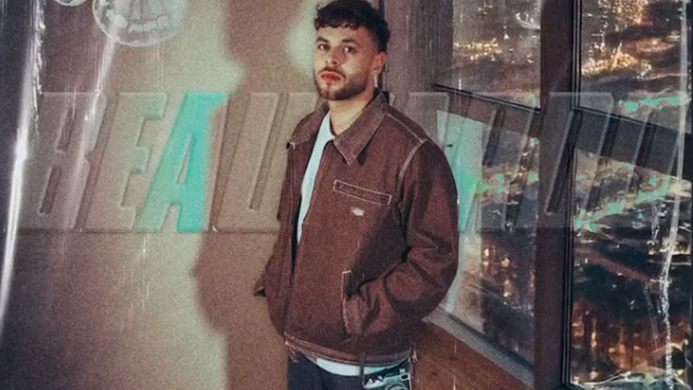
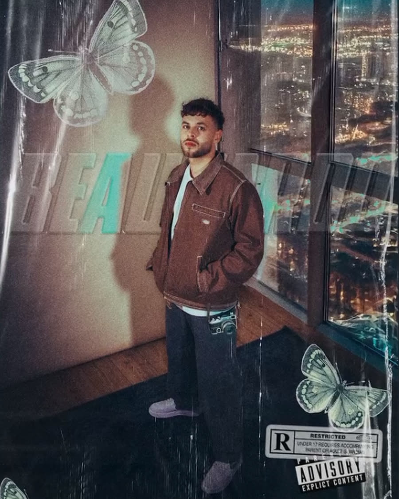
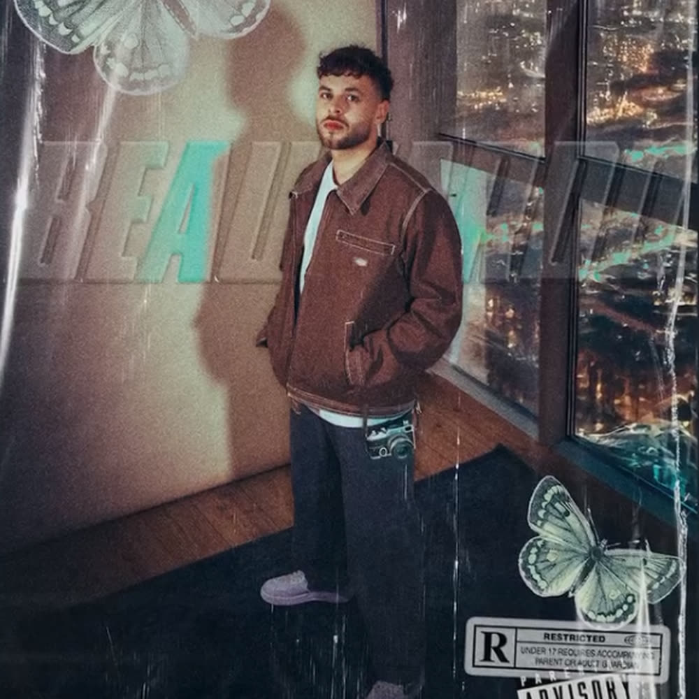
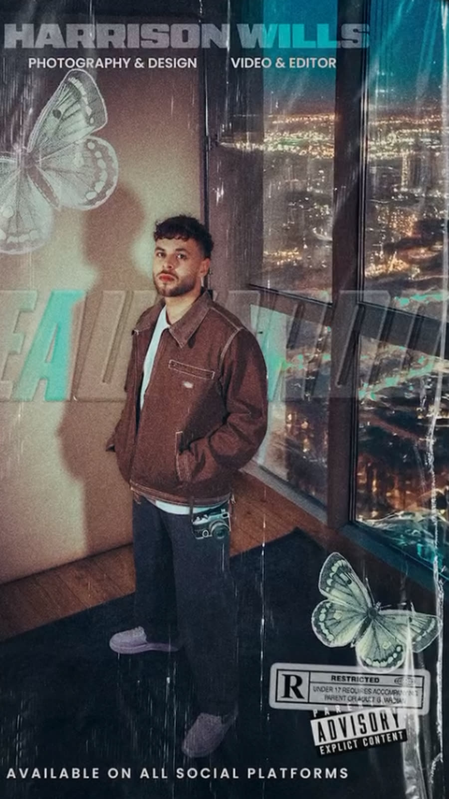

Social-first
After Hours
Event coverage that had to be live the same night, not three weeks later.

- Client
- After Hours
- Sector
- Events / social
- Role
- Shooter, editor
- Year
- 2026
The brief
What they needed
A late-night series where the whole point is momentum: if the content lands three weeks after the night, nobody cares. Stories had to go out during the event and the grid post had to be ready by the next morning.
It also had to look good in near-darkness, which is where most event coverage falls apart.
The approach
How it was shot
Fast, handheld, close, and lit with whatever the room already had plus one small light. Shooting for the crop from the start meant the vertical stories needed no re-framing.
A rough cut was assembled on site between sets, so the first clips were live before the night ended and the full edit landed before lunch the next day.
Frames
From the shoot



Delivered
What came out of it
- Live story clips
- 1 recap reel (30s)
- 15 edited stills
- Next-morning grid set
- Crowd & atmosphere
- Artist pick-ups
Want something like this?
Tell Harrison what you are launching and roughly when. A reply usually lands the same day.